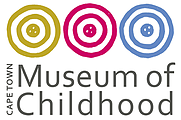
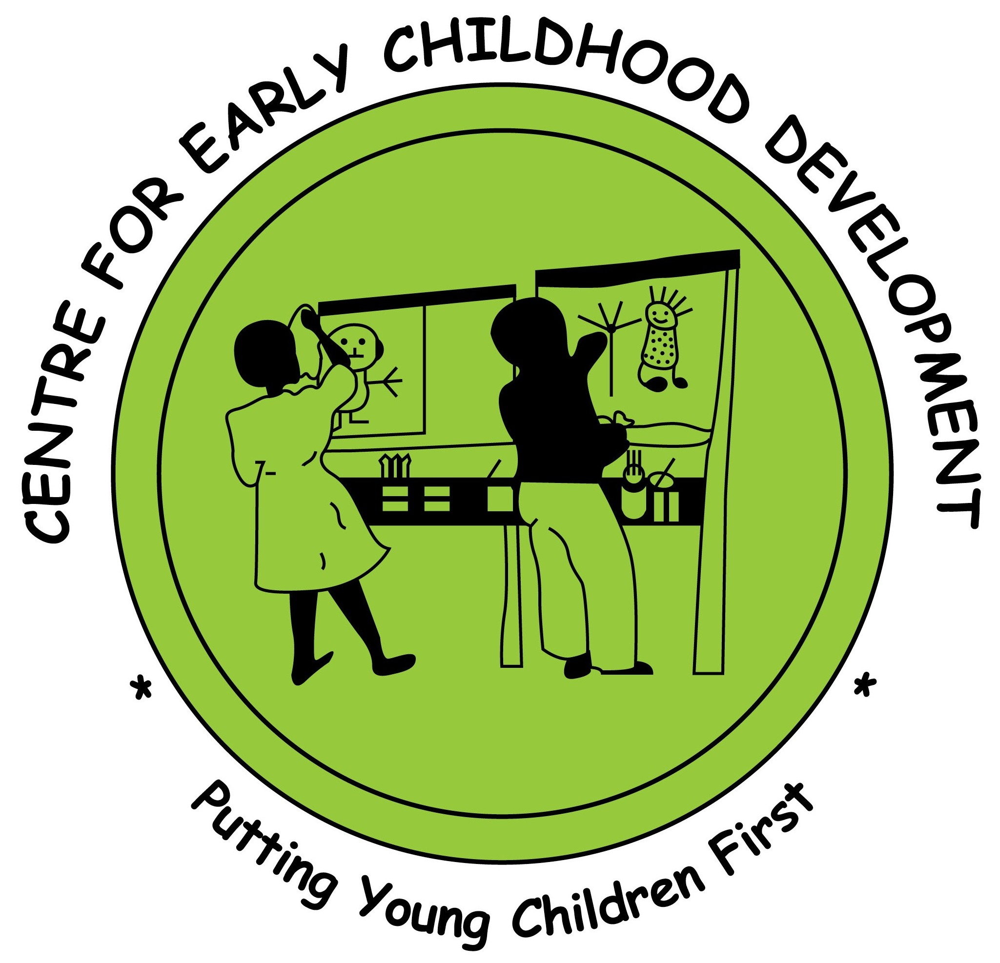

|

|
Cape Town Museum of Childhood
Story Collection Toolkit |

|
What is digital storytelling?
Digital storytelling is a short form of digital media production that gives everyday people the ability to share their own story. The technique is centered around a story that an individual is willing to share. The individual writes the script to their story and then records themselves reciting it. This lets the author's voice become an integral part of their story. At it's core, digital storytelling is a process that allows diverse people to share their life stories with each other.
Why collect stories?
The Cape Town Museum of Childhood has been collecting childhood stories since 2017. These stories are available to the public via the museum website. Each story gives a glimpse at what that individual's childhood was like, and the collection of stories show how childhood's differ amongst different people. The goal of collecting these narratives is to celebrate childhood. If you would like to create your own digital story, please follow the instructions below!